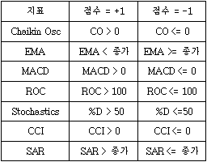

7Binary Wave
7Binary Wave
 개요
개요
7 Binary-wave는 7가지의 지표를 조합하여 7개의 값을 더한 후, 그 값에 따라 추세를 판단하는 지표입니다.
 계산식
계산식

 해석 및 활용
해석 및 활용

 기준선 활용
기준선 활용
(1) 각 지표를 합한 값이 2 이상이면 매수 신호, -2보다 작으면 매도 신호로 해석
(2) 각 지표를 합한 값이 0선 위에 있으면 강세시장, 0선 아래에 있으면 약세 시장으로 해석
(3) 0선을 상향 돌파하면 매수 신호, 하향 돌파하면 매도 신호로해석